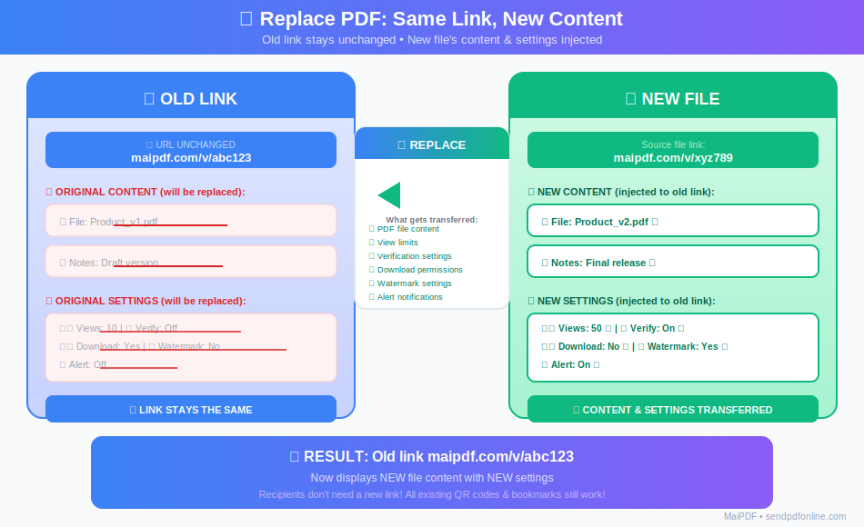
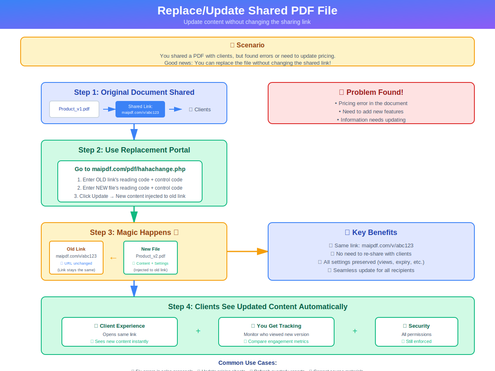

💡 The Problem
You've shared a PDF link with clients, then discovered an error that needs fixing. The traditional approach: upload a new file, get a new link, send it again—confusing the client: "Which link should I use?"
MaiPDF's solution: The link stays the same. You swap the file in the background. Recipients continue using the original link, and when they open it, they automatically see the updated version. No re-sending, no confusion.
How It Works
The reading code stays the same. The content and settings are replaced by the new version.
Watch the Replacement Process

🔄 Animation: See how new content gets injected into the old link (auto-loops every 6 seconds)
Before & After Comparison
Same link stays active: New file content injected into old link
Step-by-Step Process
File Replacement Flow
Why Replace Instead of Resending?
Link Stays the Same
No need to resend URLs or QR codes. Recipients continue using the original link.
Settings Sync Automatically
Access controls (view limits, verification, watermarks) follow the new file. No manual reconfiguration.
Access Records Preserved
View history and analytics remain intact. Review who accessed both old and new versions.
Instant Updates
Changes take effect immediately. Next time someone opens the link, they see the new content.
Common Use Cases
Use Cases)) Fix Mistakes Typos in contracts Wrong pricing Outdated info Update Versions Price lists Product catalogs Training materials Change Settings Add email verification Adjust view limits Enable watermarks Retract Content Temporary removal Replace with blank PDF Emergency revocation
📝 Fix Mistakes After Sharing
Found a typo or error in a contract? Replace the file without notifying everyone about a new link.
💰 Update Pricing or Versions
Price lists, product catalogs, or versioned documents can be updated seamlessly.
⚙️ Change Access Settings
Need to adjust view limits, add email verification, enable watermarks, or modify download permissions? Replace with a file that has updated settings.
🚫 Retract Content
Need to temporarily remove access? Upload a blank PDF, then replace the original link with it.
How to Replace a PDF (Simple Steps)
Visit the replacement portal:
Enter Old Codes
Input your old reading code + old control code
Enter New Codes
Input your new reading code + new control code
Click Update File
The old reading code stays the same, but content and settings are replaced
What Gets Replaced
- ✅ PDF file content
- ✅ All access settings (view limits, time limits)
- ✅ Verification requirements
- ✅ Download permissions
- ✅ Watermark settings
- ✅ Alert email configurations
What Stays the Same
- ✅ Reading code (the shareable link)
- ✅ QR code (if already generated)
- ✅ Access history and analytics
- ✅ Access analytics records
Example Scenario
❌ Without Replacement
- Upload new PDF, get new link
- Manually reconfigure all settings
- Send new link to client
- Client asks: "Which link should I use?"
- Risk of client using old version with wrong pricing
⚠️ Time-consuming, error-prone, and confusing
✅ With MaiPDF Replacement
- Upload corrected PDF with same settings
- Use replacement portal to swap files
- Original link now shows corrected version
- Client continues using the same link
- Zero confusion, no risk of wrong version
✨ Fast, seamless, and error-free
Tips for Effective Replacement
📋 Plan Ahead
If you know you'll need updates, keep your control codes handy. Store them in a secure note or password manager.
🧪 Test First
Upload the new PDF separately first. Verify all settings work correctly before replacing the shared link.
📝 Version Notes
For important documents, add a version number or date in the PDF itself so recipients know it's been updated.
🔒 Security
Control codes are sensitive. Don't share them publicly. Only use them in the replacement portal.
Frequently Asked Questions
Q: Will recipients know the file was replaced?
A: Not automatically. They'll see the new content when they open the link, but won't get a notification. If it's important, you may want to inform them separately.
Q: Can I revert to the old file?
A: Yes, if you still have the old control code. Simply use the replacement portal again to swap back.
Q: What if I lose my control codes?
A: Control codes are shown only once after upload. If lost, you cannot replace the file. Always save them securely.
Q: Does this work for Maiimg (image sharing)?
A: No. File replacement is a MaiPDF-only feature. Maiimg does not support replacing images while keeping the same link.
Q: Is there a limit on how many times I can replace?
A: No. You can replace files as many times as needed, as long as you have the correct codes.
Ready to Try PDF Replacement?
Share your PDFs with confidence. Update anytime without the hassle.
Try MaiPDF Now